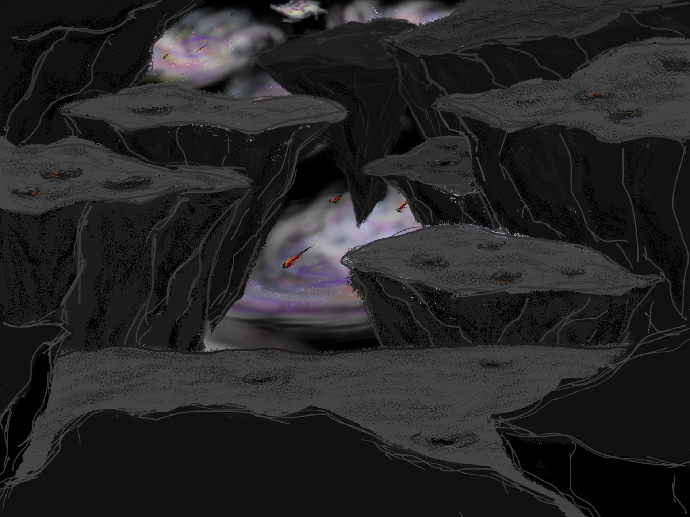

HELLO, EARTHLING. I'M ZAYING.
A little world
Outside of time.
Exploring AI for health, making things by hand,
and leaving a little room for wonder.

Waking Pudding and Stoneheart…
SECTOR 01 / PUDDING NEBULA✦
A tiny adventure? Let's go!
PUDDING / EXPLORER 001Idle
Stoneheart · keep your distance
Drag to orbit · scroll to zoom · click a destination
Somewhere between
science & a daydream.